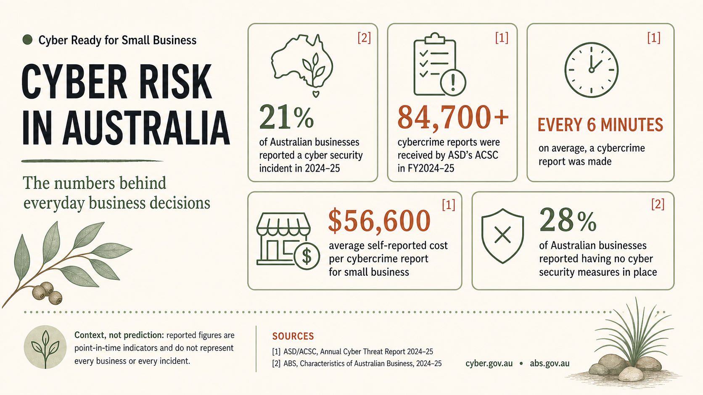

Health privacy
The OAIC’s health-privacy guide helps health service providers understand obligations under the Privacy Act 1988. It does not mean every health practice has identical obligations, and training does not deliver legal compliance.[6]
Australian small business field guide
Help your team recognise threats, protect sensitive information and reduce the risk of compromise through practical, tailored training.
Tell us about your team, sector and the situations you want to prepare for. Training is scoped after an initial conversation.
A practical starting point
Cyber risk is not one event or one type of organisation. It can look like a convincing invoice, a stolen password, business email compromise, ransomware or information handled in the wrong place.
These national figures help set the context; they do not predict what will happen to every business.
Read the full source register and use current official guidance for incident reporting or recovery.

Make the next decision easier
Small and medium businesses often hold valuable customer information while working within practical limits on time, budget and specialist cybersecurity support. Healthcare providers face an added concern: the sensitive health information they handle requires particular care.[6] Practical training puts everyday decisions in context: checking unexpected emails and invoices, protecting accounts, handling sensitive information, keeping devices current and knowing where to raise a concern.
It also helps staff distinguish a suspicious event from a situation that needs escalation. Cybercrime reports are made through ReportCyber; cyber security incidents are events ASD’s ACSC has responded to. The terms are related, but they are not interchangeable.[1]
A shared vocabulary
The Essential Eight is an ASD mitigation framework. It can support risk reduction; reading this page or attending training does not make a business completely secure.[3]
Keep business applications updated so known weaknesses are less likely to be used.
Apply supported operating-system updates in a planned, reliable way.
Add a second check to important accounts, starting with email and administrator access.
Give elevated access only where it is needed and review who has it.
Limit which applications can run so unapproved software is less likely to execute.
Control macros so unexpected documents are less able to run risky code.
Configure everyday software to reduce exposure to common attacks.
Maintain and test backups so important information can be recovered when needed.
Specialist lens, broader service
Health service providers routinely handle sensitive health information. This specialist lens sits within a broader small-business training service; obligations can differ by organisation and circumstance.[6]
The OAIC’s health-privacy guide helps health service providers understand obligations under the Privacy Act 1988. It does not mean every health practice has identical obligations, and training does not deliver legal compliance.[6]
An eligible data breach has defined conditions: unauthorised access, disclosure or loss of held personal information; likely serious harm; and no remedial action that prevents that likely risk. Eligible breaches require notification to affected individuals and the OAIC. This is educational information, not legal advice.[7]
Keep My Health Record notification separate from the general NDB explanation. Reporting entities have notification requirements to the Australian Digital Health Agency for actual or potential My Health Record breaches. Non-My-Health-Record breaches may need handling under the Privacy Act NDB scheme, and OAIC notification may also be required with exceptions.[8]
Tailored to the work
Scope follows the conversation and can vary by role, systems, data handled and sector. Topics may include suspicious emails and invoices, passphrases and MFA, sensitive information, updates, reporting pathways, backups and practising what to do in an emergency.[4]
Start with your team, sector and the situations you want to prepare for.
Focus on the decisions people face in their day-to-day work.
Shape useful discussion and activities around those real situations.
Leave with clear, proportionate next actions to discuss internally.
Be ready to act
An emergency plan can reduce impact and help staff spend less time figuring out what to do. Training should also be refreshed periodically.[4]
For an actual or suspected incident, use current official reporting and recovery channels, and do not delay emergency, legal, privacy, insurer or specialist incident-response advice.
Check the source
Public guidance changes. Follow the linked primary sources for current information and obligations.
Start with a conversation
Tell us about your team, sector and the situations you want to prepare for.